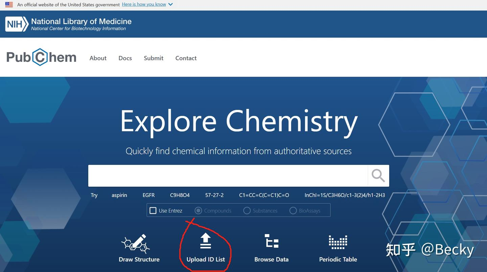
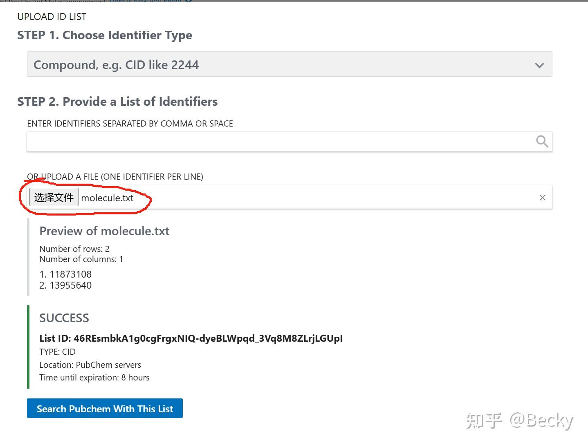
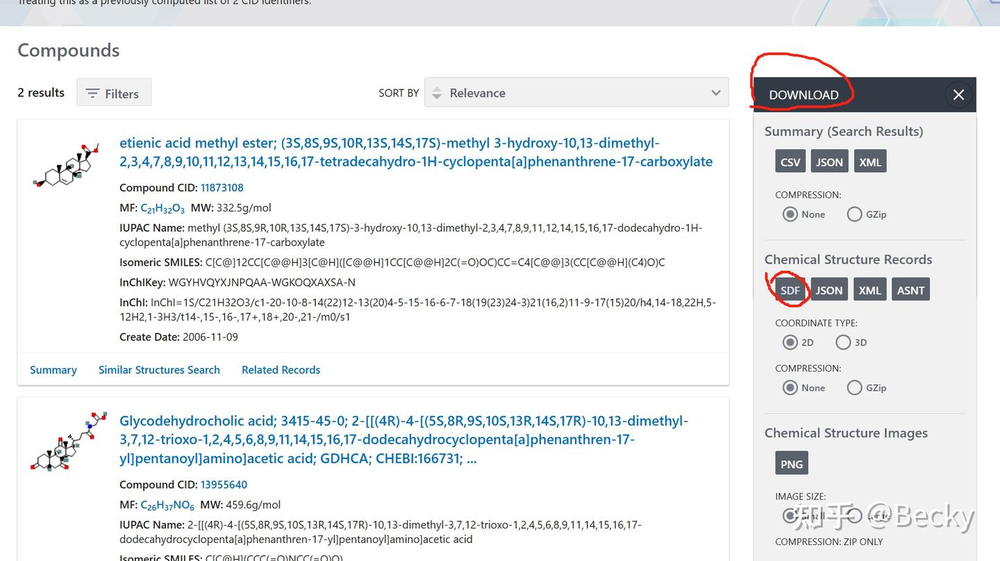
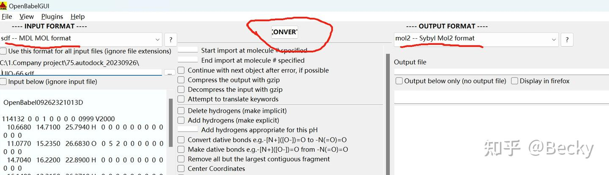

批量下载和转化小分子结构文件
好久不发推送啦，计划重振旗鼓，激励自己每天学习新东西~
这几天给师姐弄批量对接，她是从代谢组中得到了一些小分子，想和一个蛋白对接，筛选其中与该蛋白结合很强的小分子，代谢组提供了小分子的名字和CID号，需要根据该信息获得小分子的结构文件，用于对接。
于是诞生了本推送，本推送可以解决：
有了一批小分子CID number，批量下载它们的结构文件用于对接；
小分子CID number是pubchem官网上给予的每个小分子独一无二的id号，如果有小分子名称，没有CID，可以在pubchem中搜索其对应的id号。
1.根据小分子CID号批量下载其结构文件
小分子CID号存在文本文件中，格式如下（这里以两个小分子为例）：
文本文件命名为molecule.txt
进入pubchem官网PubChem (nih.gov)

点击“Upload ID list”，加载刚刚创建的molecule.txt文件，再点击“search pubchem with this list”即可。


点击右侧download，根据需求下载，如果想下载结构文件，点击需要的格式，本次要做批量对接，因此选择SDF格式，建议选择2D，因为有的小分子没有3D，2D格式可以保证尽量多的下载到小分子结构。
2.小分子格式转化
对接需要mol2格式文件，推荐使用openbabel进行格式转化。
openbabel下载网址：Releases · openbabel/openbabel (github.com)
有windows版本，左边选择输入文件格式（本次是sdf），再加载输入文件,右侧选择输出文件格式（本次是mol2），定义输出文件名，然后点击中间的“convert”，windows可实现少量小分子格式转换，如果上百个小分子，建议用Linux版本，不然电脑会崩。

linux的转化命令：
#openbabel安装：
#用Babel软件(https://github.com/openbabel/openbabel/releases)
#下载后解压
tar xvf openbabel-3.1.1-source.tar.bz2
cd openbabel-3.1.1
#安装
mkdir build
cd build
cmake3 ..
sudo make -j install
#将sdf格式转成mol2格式并且将每个小分子拆分成单个mol2文件：
obabel -i sdf human_molecules.sdf -o mol2 -O human.mol2 -m